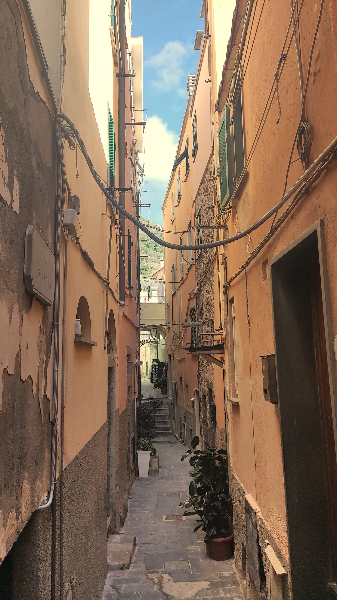

Corniglia, nestled among the five villages of Cinque Terre, boasts a distinctive infrastructure setting it apart from its coastal counterparts. Perched atop a cliff, it distinguishes itself by lacking direct access to the sea, a feature that adds to its allure. Accessible via a winding staircase of several hundred steps or a shuttle service, this elevated location offers visitors an exclusive viewpoint and a more tranquil, secluded ambiance. The village's infrastructure reflects its elevated position with narrow, meandering streets that wind through the town's heart, leading to a charming central square bustling with local life. Connecting pathways extend from Corniglia, linking it to an intricate network of hiking trails and neighboring vineyards, unveiling breathtaking panoramas of the Mediterranean landscape. While it lacks a traditional harbor, Corniglia's appeal lies precisely in its elevated stance, fostering a serene atmosphere distinct from the liveliness of coastal hubs. This tranquil setting, embraced by the absence of bustling crowds found in neighboring villages, offers a haven for those seeking a quieter and more introspective experience amid the beauty of Cinque Terre.

Infrastructure